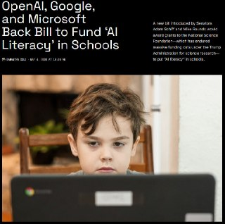
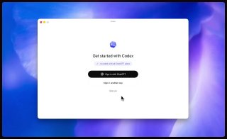
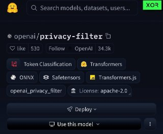
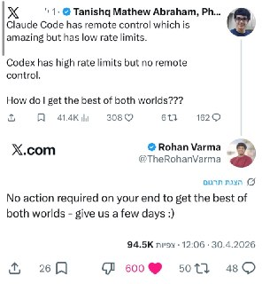
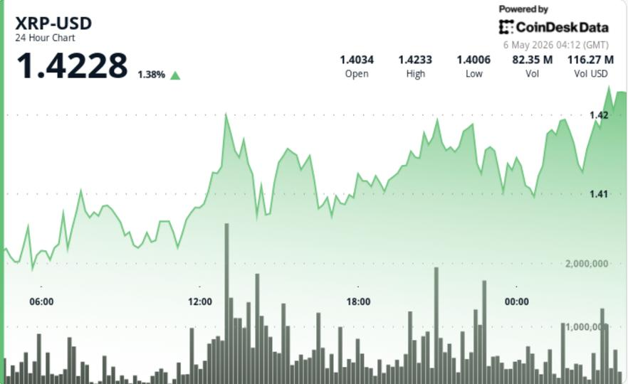

WIREDנמוכה06.05.2026, 00:00
How Shivon Zilis Operated as Elon Musk’s OpenAI Insider
אימות 1
How Shivon Zilis Operated as Elon Musk’s OpenAI Insider

‘I Actually Thought He Was Going to Hit Me,’ OpenAI’s Greg Brockman Says of Elon Musk
ג'יימי פוקס ויוצר "משחקי הדיונון" בין המשקיעים בסטארט-אפ שיוצר קול ב-AI
Greg Brockman Defends $30B OpenAI Stake: ‘Blood, Sweat, and Tears’

הנה חדשות מעניינות: OpenAI, Google ו-Microsoft תומכות בחוק חדש להטמעת בינה מלאכותית בבתי הספר. בבתי הספר בארה"ב תושק תוכנית לימודים חדשה בשם "אוריינות AI" — שיעורים

ב-OpenAI רוצים להבהיר לכם שקודקס הוא לא רק לקוד - הוא גם לעבודה יומיומית (סטייל קו-וורק) אז כבר במהלך ההתחברות הם נותנים לכם להגדיר מה העבודה שלכם, באיזה תחום אתם צריכים

מי אמר שאפל ו-AI לא הולך ביחד? 😃 בעדכון האחרון לאפליקציית Apple Support הם השאירו בטעות קבצי Claude.md … מה שמראה שהם משתמשים בקלוד כדי לכתוב תיעוד וקוד 😏 מקור בינה

אם רציתם עד היום לעבור ל-Codex ולתת לו הזדמנות, אבל מה שעצר אתכם זה שכל הקונקטורים, הסקילים, הפרויקטים והצ'אטים שלכם כבר מסודרים בקלוד קוד או כל סוכן אחר – עכשיו זה כבר

חברת OpenAI פרסמה בשקט בגרסת קוד פתוח כלי למניעת הדלפת נתונים עבור מערכות בינה מלאכותית 🛡️ בפלטפורמת Hugging Face הושק ה- Privacy Filter — מודל המזהה ומסיר פרטים אישיים

הנה הדרך לבצע אוטומציה של כל התהליכים ב-VSCode תוך דקה — שוחרר תוסף עוצמתי החוסך עבודה שחורה באמצעות n8n. 🚀 התוכנה מייצרת שרשראות של סוכני בינה מלאכותית (AI agents)

כדי להצדיק שימוש בכלי AI בארגון - צריך להביא דוגמאות שמייצרות ערך אמיתי לארגון, שמחזיר את ההשקעה. אחת הדוגמאות המרתקות בעיני היא לחבר את Claude Cowork לנתונים של

ניסיתי לקחת את ה-AI קצת יותר לקצה - וממש אהבתי את מה שקיבלתי! ובמיוחד קבלו את האפקטים המגניבים! השתמשתי פה ב- GPT-Image-2 + Claude Design, עם כמה טכניקות שמשדרגות הכל

ידעתם שכל סשן של קלוד קוד מתחיל בקריאת קובץ שנקרא CLAUDE md? מה שתרשמו שם ישפיע ישירות על העבודה של קלוד. זה בעצם קובץ חוקים מאוד חשוב. אנת׳רופיק כבר מזריקים כ-50 חוקים

חברת HP השיקה מודל מנויים חדש למדפסות שלה! כעת, כדי להדפיס במדפסות חדשות, לא מספיק להחזיק דף וטונר מלא. במסגרת תוכניות ה-HP Instant Ink ו-All-in Plan, המשתמש נדרש לשלם

הנה משהו נחמד, מישהו גאון משדרג סרטים פופולריים בעזרת בינה מלאכותית. ככה זה נראה הרבה יותר טוב! 😂 #AI #בינהמלאכותית 📱 Facebook | 📱 Whatsapp | 📱 Telegram

עדכון חם: ChatGPT הפכה לחכמה יותר עבור כל המשתמשים – סם אלטמן שחרר גישה חינמית לגרסת GPT-5.5 Instant החדשה ביותר. המודל הפך למדויק יותר ב-52.5%, תוך צמצום משמעותי של כמות

ככל הנראה בימים הקרובים נקבל אפליקציית קודקס לאייפון שתשמש כשלט רחוק לקודקס במק, בדומה ל-Remote Control בקלוד קוד. בינה מלאכותית בטלגרם - t.me/AI_tg_il

לא יודע למה הפרומפט הזה נהיה ויראלי אבל אתם אוהבים פרומפטים אז נזרום… 📱 Redraw the attached image in the most clumsy, scribbly, and utterly pathetic way possible. Use a

אתם יכולים לבנות אתרים ואפליקציות ישירות מתוך הטלגרם. אתם צריכים קודם לחבר את הבוט דרך ההגדרות בלאבבול: https://lovable.dev/settings/apps אחרי שחיברתם אתם פשוט מתכתבים עם

הכירו את ChatGPT Images 2.0 – יצירת תמונות מדויקת עם הבנה עמוקה 👈🏽 לקריאה נוחה במחשב 👉🏽 ⬇️ לקריאת נוחה בנייד ⬇️

קבלו את OpenShorts – כלי AI חינם ליצירת תוכן 🎬 ✨ עורכי וידאו, הריצו ישירות מהמחשב: 🔅 חיתוך אוטומטי: סרטונים ארוכים לרילסים עם כתוביות ופורמט 9:16. 🔅 יצירת תוכן: כתיבת

זהירות: קלוד, Cursor וקודקס הופכים קובצי טקסט פשוטים לקוד זדוני 👈🏽 לקריאה נוחה במחשב 👉🏽 ⬇️ לקריאת נוחה בנייד ⬇️

מודל גרסת Xiaomi MiMo V2.5 שוחרר כקוד פתוח 🚀 . שוחררו שתי גרסאות: גרסת Pro עם 1.02T-A42B וגרסה רגילה עם 310B-A15B, שתיהן תומכות בחלון הקשר (Context) של מיליון טוקנים

השתמשתי בקלוד אופוס 4.7 + מודל התמונות החדש של GPT כדי ליצור קרוסלה לאינסטגרם עם הסיפור קורע הלב של הופ, הצ׳יטה מהמדבריום בבאר שבע, שעברה התעללות בגיל צעיר באירלנד וחיה

והפעם בפינת ה-AI: איך הפתעתי את אלמוג בוקר @bokeralmog עם מודל התמונות המדהים של GPT Image 2! התהליך פשוט: 1. הלכתי לקלוד אופוס 4.7, ביקשתי שיחקור על אלמוג 2. לאחר מכן
טרנד חדש עף ברשת: העלו תמונה שלכם ומודל התמונות החדש של ג'יפיטי ייצור אתכם במגוןן לוקים וימליץ מה הכי יפה לכם 🤣 (מצרף את הפרומפט) לא יאומן שהמודל הזה הצליח להביא לסופן
שני צעירים בני 20 נורו למוות בעת ששהו ברכב בקלנסווה, וצעיר נוסף נפצע קשה. המשטרה סורקת אחר החשודים ומעריכה כי הרקע למעשה הוא נקמת דם במסגרת סכסוך.
הניסוח הזהיר יותר הוא: מרקו רוביו הכריז על סיום מבצע "זעם אפי" והעריך כי הסכם בין ישראל ללבנון הוא בר-השגה, בעוד דונלד טראמפ השה את מבצע "פרויקט החירות" במצר הורמוז בשל התקדמות במשא ומתן עם איראן.
הניסוח הזהיר יותר הוא: נשיא ארה"ב הודיע על השהייה זמנית של "פרויקט חירות" לליווי ספינות במצרי הורמוז, בשל התקדמות במגעים להסכם עם איראן ובבקשת פקיסטן ומדינות נוספות.
שני צעירים כבני 20 נורו למוות בעת ששהו ברכב בקלנסווה, וגבר נוסף נפצע קשה. המשטרה סורקת אחר החשודים ומעריכה כי הרקע לאירוע הוא נקמת דם במסגרת סכסוך.
הניסוח הזהיר יותר הוא: המפלגות הגדולות בארה"ב פועלות לשינוי מפת מחוזות הבחירה במיזם של "מיחוז מחדש", במטרה להנדס את תוצאות הבחירות לבית הנבחרים לטובתן עוד לפני ההצבעה.

Price compression near $1.42 comes as analysts point to a repeating bull flag structure and thinning liquidity conditions.

הפוסט מציג טענת "חינם", אבל בלי אימות ברור מול המוצר הרשמי, ולכן צריך לראות בזה טענה שדורשת בדיקה.

Solana's Drift Protocol says most of the stolen funds linked to North Korean hackers remain traceable—and it has a plan to make victims whole.
Two papers published this week have reignited debates about the risk posed by “Q-day” to the cryptography that underpins digital assets.

At a conference dedicated to the riskiest traders in finance, Miami's crypto scene appeared far different than during its pandemic-era boom.

קני מילר ורוי רביבו שיוויו כי מדובר היה ב-48 שעות קשות עבור הקבוצה.

עדכון קצר סביב ה-1:2 הדרמטי על הפועל פ"ת הוריד במעט את מפלס הלחץ בכרמל, אך לא העלים את התחושות הקשות בקרב הנהלת הקבוצה בשל הביקורת מצד הקהל: "כואב לראות שזה התודה למי שהשקיע כסף, זמן ואת

הפוסט מנוסח בצורה שיווקית ומנופחת. העובדות שכדאי לקחת ממנו הן: תסכול במועדון מהיכולת והגישה. מהפכה בהרכב המלאבסים לקראת הפועל ב
כמה עשרות מאוהדי הפועל חיפה הגיעו למגרש האימונים בכפר גלים, שם קיללו את הצוות המקצועי והבריחו את השחקנים לפני המשחק נגד הפועל פ"ת.